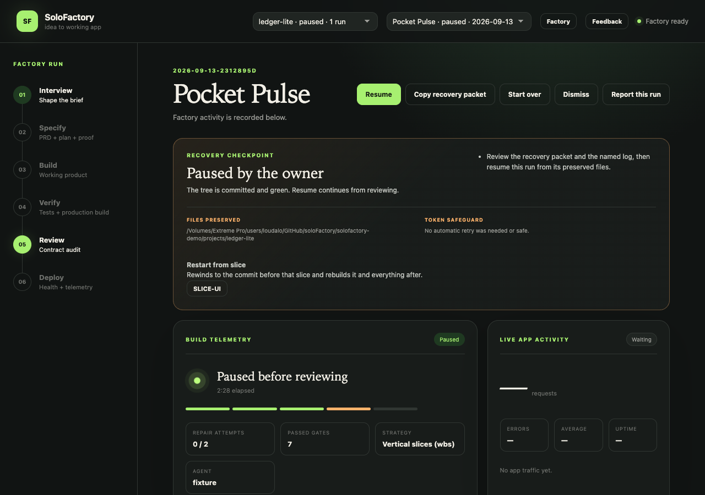
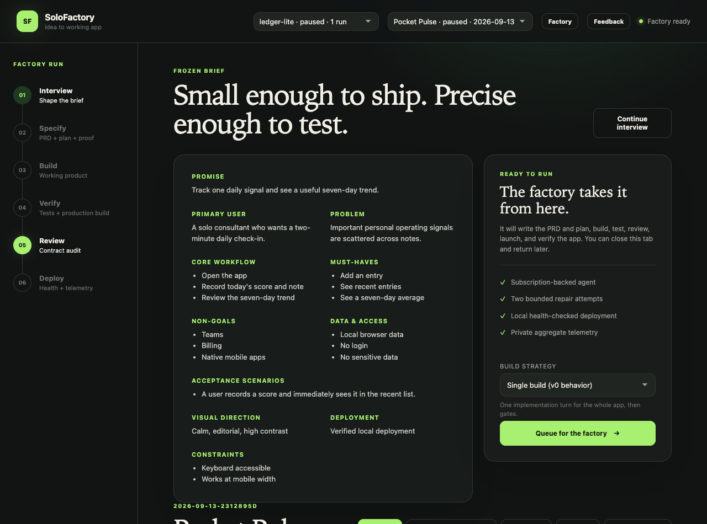
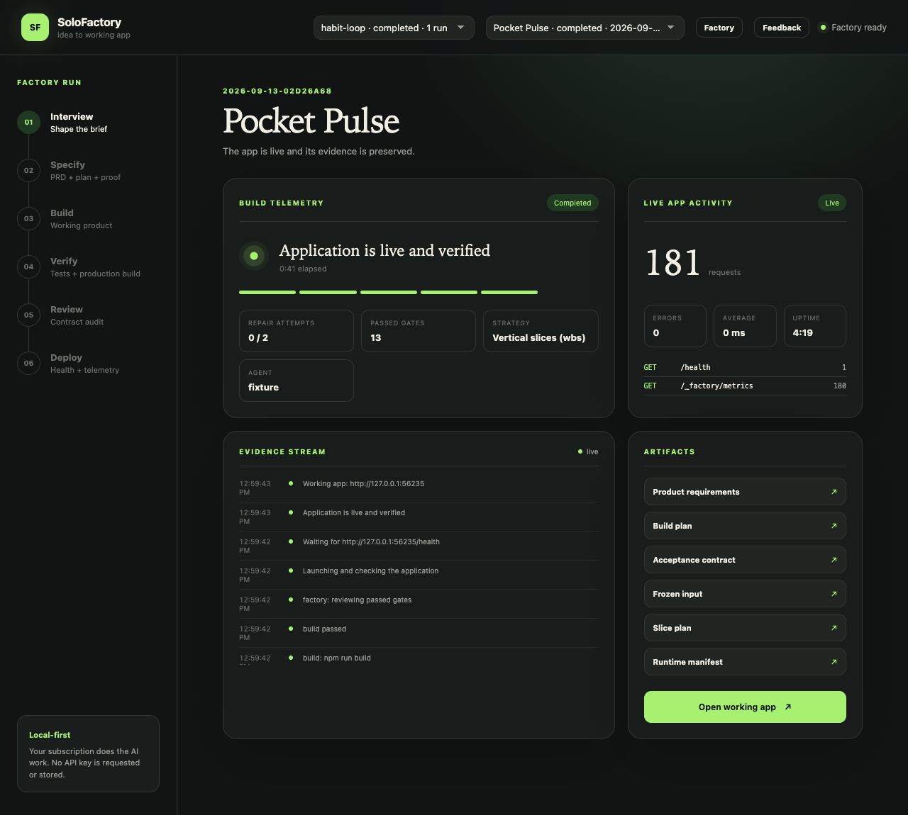
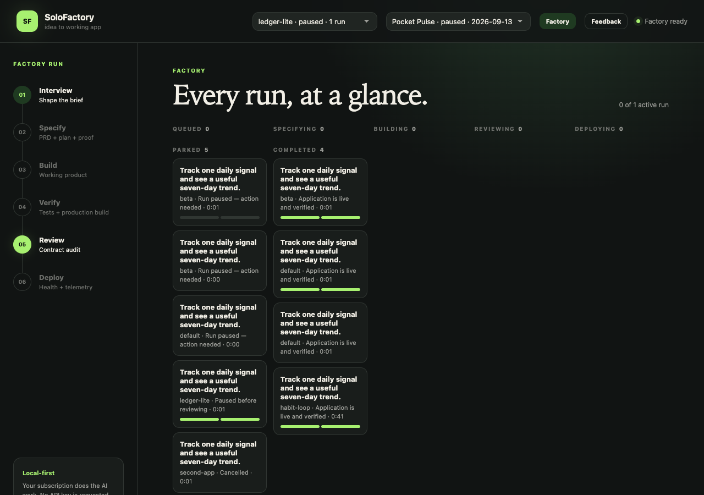
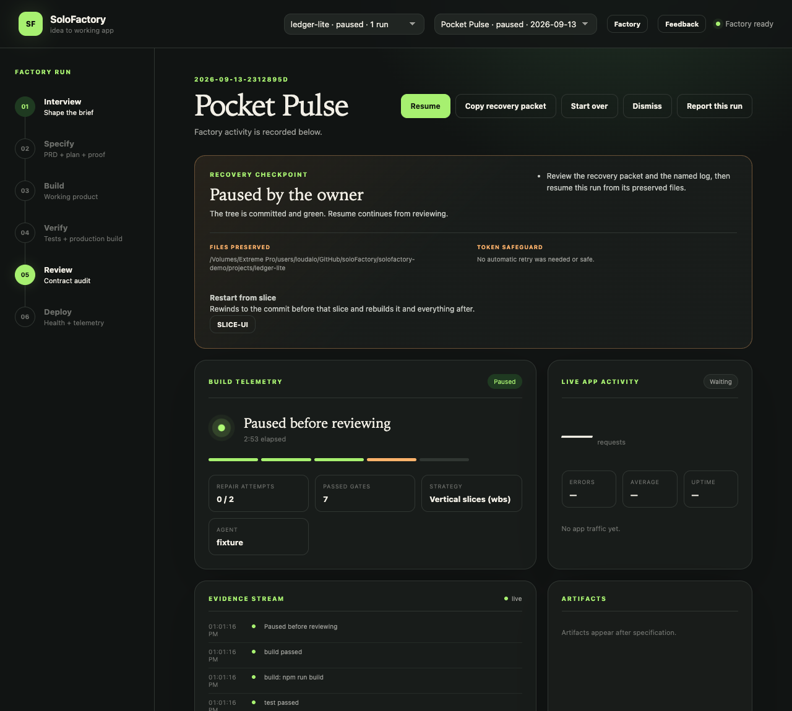

SoloFactory 0.7
User manual
From a conversation to a running, verified app on your own machine. Your Codex or Claude subscription does the AI work; SoloFactory owns the process, the gates and the evidence.
1. Start the factory
You need Node 22 or newer and a signed-in Codex or Claude Code command line. Then:
npm startOpen http://127.0.0.1:4173. The status pill top right reads Factory ready when a provider is signed in. No API key is ever asked for or stored; the agents run under your subscription.
2. Projects
A project is the folder the factory builds into. The first selector in the header switches between them or creates a new one. Each project is its own git repository with the app at the root, a .aai/ folder of project context you can edit, and a run history.
Projects live under the factory home (~/.solofactory/projects/ by default). A folder you create there by hand shows up too. Switching projects never interrupts a run.
3. Shape the brief

Answer in your own words. The guide keeps asking until it can state the promise, the primary user, the core workflow, the must-haves, the non-goals and at least one acceptance scenario. Nothing is built until the brief is complete, because a vague brief is the most expensive kind of bug.

Build strategy. Single build makes the whole app in one implementation turn. Vertical slices breaks it into a walking skeleton followed by thin end-to-end slices, each one tested and committed before the next starts. Slices cost more turns but fail smaller, and only slice runs can be restarted from a chosen slice.
Continue interview reopens the conversation if something is missing.
4. Queue a run
Queue for the factory freezes the brief and puts the run in the project's queue. You land back in a fresh interview, so you can shape the next release while this one builds.
- Runs in one project go one after another, each building on the tree the last one left.
- Runs in different projects can overlap when
SOLOFACTORY_MAX_ACTIVE_RUNSis above 1. - A second brief for a project that already shipped becomes a follow-on release. Deploying it stops the previous release's app.
- Remove from queue drops a brief that has not started.
5. Follow a run

The second header selector picks a run within the current project. The run view shows:
| Panel | What it tells you |
|---|---|
| Build telemetry | Current stage, elapsed time, the stage bar, repair attempts used (of two), gates passed, strategy and agent. |
| Live app activity | Aggregate metrics from the deployed app: requests, errors, latency, uptime and route counts. No bodies, headers, addresses or identifiers. |
| Evidence stream | Every lifecycle event, newest first. Gate results, commits, agent starts and stops. |
| Artifacts | Product requirements, build plan, acceptance contract, frozen input, slice plan, runtime manifest, and Open working app once it is live. |
The rail on the left shows the six stages. Each one ends with a gate the controller owns: install, test and build must exit 0; review must pass; the deployed app must answer its health check. A failed gate gets at most two bounded repair attempts, then the run parks.
6. The Factory board

Factory in the header opens the board. Columns follow the lifecycle: queued, specifying, building, reviewing, deploying, then parked and completed. Repairing counts as building; failed, interrupted, cancelled and paused runs all sit in parked. Each card names its project, stage and duration, and slice runs carry a progress bar. A queued card that is waiting on a parked run says so.
Click a card to open that run. If it belongs to another project the factory switches to it first.
7. Pause, resume, cancel, restart

| Control | When it shows | What it does |
|---|---|---|
| Pause | While a stage is running | Lets the run finish the stage it is in, commits the green tree, and parks before the next one. The button reads Pausing after … until the run parks. Nothing is lost and nothing is replayed on resume. |
| Resume | On a paused, failed or interrupted run | Continues the same run, same files, from the stage it stopped at. Goes to the front of the project's queue. |
| Cancel run | While active | Stops work now. The workspace stays as it was. |
| Restart from slice | On a parked slice run, for every completed slice after the first | Rewinds the tree to the commit before that slice and rebuilds it and everything after, exactly once. Earlier slices keep their commits. |
| Start over | On a parked run | Creates a brand-new run from the same brief. Use it when the first slice itself is wrong. |
| Dismiss | On a parked run | Releases the project's queue without fixing this run. |
8. When a run parks
A run parks when a gate fails past its repair budget, an agent hits a usage limit, sign-in, network or toolchain problem, the factory restarts mid-run, or you pause or cancel it. Known blockers are never blindly retried; a parked run holds its project's queue so nothing builds on a half-repaired tree.
The Recovery checkpoint card explains what happened, what to do, where the preserved files are, and whether any automatic retry was spent. Copy recovery packet puts a full handoff on your clipboard for pasting into Codex or Claude when you want to fix things by hand, then Resume from the preserved workspace.
9. Report a problem
Feedback in the header, or Report this run on a parked run, drafts a bug report or feature request. The run report attaches the run's evidence and the last log lines, scrubbed of paths and secrets. The body always travels through your clipboard, so you see exactly what is sent.
10. Settings
| Variable | Meaning |
|---|---|
SOLOFACTORY_HOME | Where runs, projects and the demo live. Default ~/.solofactory. |
SOLOFACTORY_ROOT | Where projects are discovered. Default: the home. |
SOLOFACTORY_MAX_ACTIVE_RUNS | How many projects may build at once. Default 1. |
SOLOFACTORY_AGENT_IDLE_MINUTES | Agent idle deadline, reset by any output. Default 6. |
SOLOFACTORY_AGENT_HARD_MINUTES | Agent total safety cap. Default 45. |
SOLOFACTORY_AGENT_BACKOFF_SECONDS | Wait before the one automatic Codex resume. Default 15. |
SOLOFACTORY_DEMO=1 | Run with the deterministic fixture provider instead of a real agent. |
SOLOFACTORY_ISSUES_URL | Where feedback reports are filed. |
Screenshots were taken from the demo mode (fixture provider), which is why every project is called Pocket Pulse.